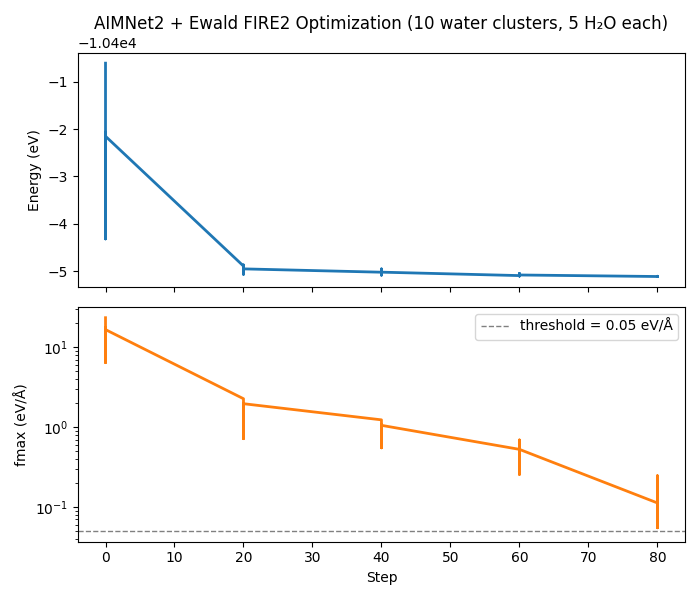

Note
Go to the end to download the full example code.
AIMNet2 + Ewald Pipeline Geometry Optimization#
This example demonstrates the autograd pipeline — the most powerful composition pattern in nvalchemi — by combining a machine-learning potential (AIMNet2) with a long-range electrostatics model (Ewald summation) for geometry optimization of water clusters.
The key idea: AIMNet2 predicts per-atom partial charges and short-range energies. Those charges feed into the Ewald model, which computes the long-range Coulomb energy. Forces are obtained by differentiating the total energy (AIMNet2 + Ewald) with respect to positions via a single autograd pass. This is crucial because the Ewald energy depends on positions both directly (through interatomic distances) and indirectly (through the position-dependent partial charges predicted by AIMNet2). A naive per-model force summation would miss the indirect contribution.
The pipeline handles this automatically:
pipe = PipelineModelWrapper(groups=[
PipelineGroup(
steps=[aimnet2, ewald],
use_autograd=True,
),
])
With use_autograd=True, the pipeline:
Removes
"forces"from each sub-model’sactive_outputsso they only compute energies.Runs AIMNet2 → charges + E_aimnet flow onto the batch.
Runs Ewald (reads charges from batch) → E_ewald.
Sums E_total = E_aimnet + E_ewald.
Computes forces as
-dE_total/drviatorch.autograd.grad, which backpropagates through both the Ewald and AIMNet2 graphs.
We then optimize a batch of distorted water clusters using the
FIRE2 optimizer.
Key concepts demonstrated#
PipelineModelWrapperwithuse_autograd=Truefor dependent model composition.AIMNet2 charge prediction auto-wired to Ewald electrostatics (both use the key
"charges"— no explicit wire mapping needed).Batched geometry optimization with
FIRE2.ConvergenceHookfor per-system convergence monitoring.
Setting up AIMNet2#
Install the aimnet dependency:
pip install aimnet
The checkpoint aimnet2_wb97m_d3_3 is downloaded automatically on
first use.
from __future__ import annotations
import logging
import math
import os
import torch
from nvalchemiops.torch.interactions.electrostatics.parameters import (
estimate_ewald_parameters,
)
from nvalchemi.data import AtomicData, Batch
from nvalchemi.dynamics.base import ConvergenceHook
from nvalchemi.dynamics.hooks import LoggingHook
from nvalchemi.dynamics.optimizers.fire2 import FIRE2
from nvalchemi.models.aimnet2 import AIMNet2Wrapper
from nvalchemi.models.ewald import EwaldModelWrapper
from nvalchemi.models.pipeline import PipelineGroup, PipelineModelWrapper
logging.basicConfig(level=logging.INFO)
Building a batch of water clusters#
Each cluster has 4 water molecules (12 atoms) in a periodic box. We create 3 clusters with increasing geometric distortion from the equilibrium water geometry.
device = "cuda:0" if torch.cuda.is_available() else "cpu"
N_MOLECULES = 5
N_CLUSTERS = 10
BOX_SIZE = 60.0 # Å — large box for sparse water clusters
# NOTE: estimate_ewald_parameters may produce a real-space cutoff
# larger than BOX_SIZE/2 for small/sparse systems. The Ewald sum
# remains correct — the real-space part simply sees all atoms.
O_H_BOND = 0.96 # Å
HALF_ANGLE = math.radians(104.5 / 2)
MAX_DISPLACEMENT = 0.1 # Å — cap per-atom random displacement
def _make_water_cluster(
n_mol: int, distortion: float, seed: int, box: float
) -> AtomicData:
"""Create a water cluster with n_mol H2O molecules in a periodic box."""
torch.manual_seed(seed)
positions_list = []
atomic_numbers_list = []
# Space molecules evenly along x-axis
spacing = box / (n_mol + 1)
for i in range(n_mol):
ox = spacing * (i + 1)
oy = box / 2 + (i % 2 - 0.5) * 1.5 # offset alternating molecules
oz = box / 2
o_pos = torch.tensor([ox, oy, oz])
h1_pos = o_pos + O_H_BOND * torch.tensor(
[math.sin(HALF_ANGLE), 0.0, math.cos(HALF_ANGLE)]
)
h2_pos = o_pos + O_H_BOND * torch.tensor(
[-math.sin(HALF_ANGLE), 0.0, math.cos(HALF_ANGLE)]
)
positions_list.extend([o_pos, h1_pos, h2_pos])
atomic_numbers_list.extend([8, 1, 1])
positions = torch.stack(positions_list)
# Clamp per-atom displacement to avoid atom collapse.
displacements = distortion * torch.randn_like(positions)
disp_norm = displacements.norm(dim=-1, keepdim=True)
scale = torch.where(
disp_norm > MAX_DISPLACEMENT,
MAX_DISPLACEMENT / disp_norm.clamp_min(1e-12),
torch.ones_like(disp_norm),
)
positions = positions + displacements * scale
n_atoms = len(atomic_numbers_list)
return AtomicData(
positions=positions.float(),
atomic_numbers=torch.tensor(atomic_numbers_list, dtype=torch.long),
forces=torch.zeros(n_atoms, 3),
energy=torch.zeros(1, 1),
cell=torch.eye(3).unsqueeze(0) * box,
pbc=torch.tensor([[True, True, True]]),
charge=torch.zeros(1, 1), # neutral system
)
data_list = [
_make_water_cluster(
N_MOLECULES, distortion=0.25 * (i + 1), seed=42 + i, box=BOX_SIZE
)
for i in range(N_CLUSTERS)
]
batch = Batch.from_data_list(data_list, device=device)
print(
f"\nBatch: {batch.num_graphs} clusters, "
f"{batch.num_nodes} atoms, box={BOX_SIZE} Å, device={batch.device}"
)
Batch: 10 clusters, 150 atoms, box=60.0 Å, device=cuda:0
Model setup: AIMNet2 + Ewald pipeline#
aimnet2 = AIMNet2Wrapper.from_checkpoint(
"aimnet2_wb97m_d3_3", device=device, compile_model=True
)
print(f"Loaded AIMNet2 on {device}")
params = estimate_ewald_parameters(batch.positions, batch.cell, batch.batch_idx)
ewald = EwaldModelWrapper(
cutoff=params.real_space_cutoff.max(), accuracy=1e-6, hybrid_forces=False
)
# ewald.set_config("active_outputs", {"energy", "forces", "stress",})
# Build the pipeline. AIMNet2 outputs "charges" which Ewald requires as
# input — the names match so no explicit wire mapping is needed.
pipe = PipelineModelWrapper(
groups=[
PipelineGroup(
steps=[aimnet2, ewald],
use_autograd=True,
),
]
)
pipe.set_config("active_outputs", {"energy", "forces", "stress", "charge"})
print(f"\nPipeline: {[type(m).__name__ for m in pipe._models]}")
print(f" Output Capabilities: {sorted(pipe.model_config.outputs)}")
print(f" Active Outputs: {sorted(pipe.model_config.active_outputs)}")
Loaded AIMNet2 on cuda:0
Pipeline: ['AIMNet2Wrapper', 'EwaldModelWrapper']
Output Capabilities: ['charges', 'energy', 'forces', 'stress']
Active Outputs: ['charge', 'energy', 'forces', 'stress']
Geometry optimization with FIRE2#
FMAX_THRESHOLD = 0.05 # eV/Å
MAX_STEPS = 300
optimizer = FIRE2(
model=pipe,
dt=0.01,
n_steps=MAX_STEPS,
convergence_hook=ConvergenceHook.from_fmax(
threshold=FMAX_THRESHOLD,
source_status=0,
target_status=1,
),
)
for hook in pipe.make_neighbor_hooks():
optimizer.register_hook(hook)
Running the optimization#
OPT_LOG = "aimnet2_ewald_optimization.csv"
with LoggingHook(backend="csv", log_path=OPT_LOG, frequency=20) as log_hook:
optimizer.register_hook(log_hook)
batch = optimizer.run(batch)
print(f"\nOptimization completed in {optimizer.step_count} steps")
print(f"Log → {OPT_LOG}")
Optimization completed in 95 steps
Log → aimnet2_ewald_optimization.csv
Results#
import csv # noqa: E402
rows = []
try:
with open(OPT_LOG) as f:
rows = list(csv.DictReader(f))
except FileNotFoundError:
print(f"Log file {OPT_LOG} not found — skipping summary.")
if rows:
# Show one row per step (first system) to track convergence
seen_steps = set()
print(f"\n{'step':>6} {'energy (eV)':>14} {'fmax (eV/Å)':>14} {'system':>6}")
print("-" * 56)
for row in rows:
step = int(float(row["step"]))
graph = int(float(row["graph_idx"]))
print(
f"{step:6d} "
f"{float(row['energy']):14.4f} "
f"{float(row['fmax']):14.4f} "
f"{graph:6d}"
)
print(f"\nFinal per-system results (threshold = {FMAX_THRESHOLD} eV/Å):")
force_norms = batch.forces.norm(dim=-1) # per-atom force magnitudes
for i in range(batch.num_graphs):
mask = batch.batch_idx == i
e_i = batch.energy[i].item()
fmax_i = force_norms[mask].max().item()
converged = "CONVERGED" if fmax_i < FMAX_THRESHOLD else "not converged"
print(
f" Cluster {i}: energy = {e_i:.4f} eV, fmax = {fmax_i:.4f} eV/Å [{converged}]"
)
step energy (eV) fmax (eV/Å) system
--------------------------------------------------------
0 -10400.6104 23.4682 0
0 -10402.3193 16.8440 1
0 -10402.9629 12.5703 2
0 -10402.0645 16.2362 3
0 -10403.9424 9.4354 4
0 -10403.2383 10.8009 5
0 -10403.2236 17.4852 6
0 -10403.6875 8.3472 7
0 -10404.3193 6.4198 8
0 -10402.1523 16.6543 9
20 -10404.8916 2.2696 0
20 -10404.8682 1.9737 1
20 -10404.9785 1.4736 2
20 -10404.9424 1.8235 3
20 -10405.0654 1.0731 4
20 -10405.0088 1.4613 5
20 -10405.0361 1.2685 6
20 -10405.0273 0.8512 7
20 -10405.0430 0.7171 8
20 -10404.9512 1.9664 9
40 -10405.0215 1.2345 0
40 -10404.9521 0.9435 1
40 -10405.0273 1.0000 2
40 -10405.0322 1.0886 3
40 -10405.0840 0.5507 4
40 -10405.0518 1.0469 5
40 -10405.0723 0.5793 6
40 -10405.0439 0.7121 7
40 -10405.0645 0.5764 8
40 -10405.0205 1.0538 9
60 -10405.0928 0.5273 0
60 -10405.0469 0.6912 1
60 -10405.0801 0.4905 2
60 -10405.0898 0.5114 3
60 -10405.1025 0.2559 4
60 -10405.0908 0.4586 5
60 -10405.0996 0.3485 6
60 -10405.0791 0.5254 7
60 -10405.0908 0.3445 8
60 -10405.0801 0.5271 9
80 -10405.1123 0.1125 0
80 -10405.1064 0.2462 1
80 -10405.1104 0.1464 2
80 -10405.1113 0.1388 3
80 -10405.1123 0.0549 4
80 -10405.1113 0.1089 5
80 -10405.1123 0.0560 6
80 -10405.1084 0.2120 7
80 -10405.1104 0.1245 8
80 -10405.1104 0.1432 9
Final per-system results (threshold = 0.05 eV/Å):
Cluster 0: energy = -10405.1123 eV, fmax = 0.0490 eV/Å [CONVERGED]
Cluster 1: energy = -10405.1133 eV, fmax = 0.0344 eV/Å [CONVERGED]
Cluster 2: energy = -10405.1123 eV, fmax = 0.0229 eV/Å [CONVERGED]
Cluster 3: energy = -10405.1123 eV, fmax = 0.0457 eV/Å [CONVERGED]
Cluster 4: energy = -10405.1133 eV, fmax = 0.0158 eV/Å [CONVERGED]
Cluster 5: energy = -10405.1123 eV, fmax = 0.0347 eV/Å [CONVERGED]
Cluster 6: energy = -10405.1123 eV, fmax = 0.0203 eV/Å [CONVERGED]
Cluster 7: energy = -10405.1123 eV, fmax = 0.0125 eV/Å [CONVERGED]
Cluster 8: energy = -10405.1123 eV, fmax = 0.0148 eV/Å [CONVERGED]
Cluster 9: energy = -10405.1123 eV, fmax = 0.0448 eV/Å [CONVERGED]
Optional convergence plot#
if os.getenv("NVALCHEMI_PLOT", "0") == "1" and rows:
try:
import matplotlib.pyplot as plt
steps = [int(float(r["step"])) for r in rows]
energies = [float(r["energy"]) for r in rows]
fmax_vals = [float(r["fmax"]) for r in rows]
fig, (ax1, ax2) = plt.subplots(2, 1, figsize=(7, 6), sharex=True)
ax1.plot(steps, energies, lw=2)
ax1.set_ylabel("Energy (eV)")
ax1.set_title(
f"AIMNet2 + Ewald FIRE2 Optimization "
f"({N_CLUSTERS} water clusters, {N_MOLECULES} H₂O each)"
)
ax2.plot(steps, fmax_vals, lw=2, color="tab:orange")
ax2.axhline(
FMAX_THRESHOLD,
color="gray",
ls="--",
lw=1,
label=f"threshold = {FMAX_THRESHOLD} eV/Å",
)
ax2.set_xlabel("Step")
ax2.set_ylabel("fmax (eV/Å)")
ax2.set_yscale("log")
ax2.legend()
fig.tight_layout()
plt.savefig("aimnet2_ewald_optimization.png", dpi=150)
print("Saved aimnet2_ewald_optimization.png")
plt.show()
except ImportError:
print("matplotlib not available — skipping plot.")

Saved aimnet2_ewald_optimization.png
Total running time of the script: (0 minutes 3.892 seconds)